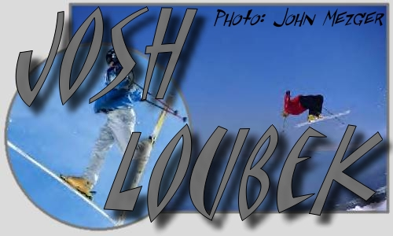
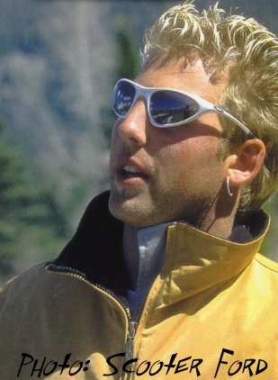
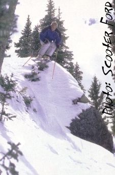
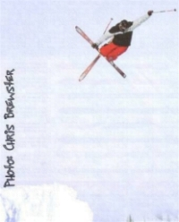

Interviewed by Paul Prins
| How old are you? 25
Where do you live? Right now, I am kickin it in whistler, lived in Steamboat for 5 years, grew up in Seattle. What kinda car do you drive? Your standard ski town car, subaru legacy Dream Car? Probably something good for traveling, like a tricked out Surburban Favorite Super Hero? The incredible hulk, but I wouldn't mind meeting wonder women.
Do you ever watch Cartoons? Which one is your favorite and why? Ya,
I'm down with the Simpsons, I can relate with Homer
|
 |
What did you think of the Buck Hill Tripple Big Air (Minnesota) and why
didn't you jump? I thought the event was fun, cool to see a big turn
out for such a small ski area. I didn't jump because I was trying to get
my knee healthy for other events, plus those landings didn't look to soft.
What do you think of the midwest scene? Its cool, lots of huckers, I'm stoked on the whole scene this year. It seems every were I go, skiing is just going off. Tons of kids ripping, skiing has recaptured the youth.
|  | Favorite ski video? Blizzard of Ahhs, 13, and hotdog
How is your season going? Winning anything or doing anything cool?
Whats the coolest thing you've seen/done this year? |
Whats your favorite pickup line? Hey, my name is Jonny Mosely, what's yours?
Does it work? Its got success written all over it.
| What do you see happening in New Zealand Next Winter? I
see myself rippin with a whole bunch sick skiers. Plus, lots of snow.
How does New Zealand Freeskier Camp compare to camps up in Canada (COC)? Its a lot different. In NZ your skiing in real winter conditions, I've never skied powder at COC. Plus, the town of Wanaka is way cool. The camp is tight, you really get to know the campers and they get some serious coaching a lot more personal then summer camps. |
 | What do you think of SkiStorage? I'm about to check it out.
Would you ever come in for a chat? Sure |